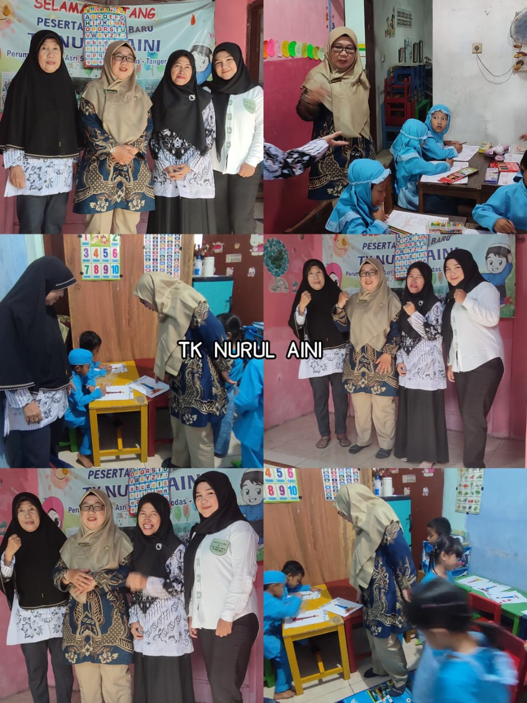

Mengenal lebih dekat TK Nurul Aini
TK Nurul Aini didirikan sebagai lembaga pendidikan anak usia dini yang bertujuan memberikan dasar pendidikan yang kuat bagi anak-anak melalui pendekatan yang menyenangkan, kreatif dan berbasis nilai-nilai moral.
Kami percaya bahwa setiap anak adalah unik dan memiliki potensi besar yang perlu dikembangkan sejak dini melalui bimbingan pendidik yang profesional.
Menjadi TK unggulan yang mencetak generasi cerdas, mandiri, dan berakhlak mulia.

Membiasakan anak memiliki tanggung jawab waktu dan tugas.
Menanamkan nilai kejujuran sejak dini dalam setiap aktivitas.
Mengembangkan ide, imajinasi dan bakat seni anak.